User Experience Guidelines
The user experience of iOS devices revolves around streamlined interaction with content that people care about. The guidelines in this chapter apply to apps that run on all iOS devices.
Focus on the Primary Task
When an iOS app establishes and maintains focus on its primary task, it is satisfying and enjoyable to use. Your app definition statement will help you focus your app on its primary task (to learn more about this statement, see “Create an App Definition Statement”). To maintain that focus, you need to determine what’s most important in each context or screen.
Analyze what’s needed in each screen. As you decide what to display in each screen always ask yourself, Is this critical information or functionality users need right now? If your answer is no, decide whether the information or functionality might be critical in a different context, or if it’s not that important after all.
For example, the iPhone Calendar app is focused on days and the events that occur on them. Users can use the clearly labeled buttons to highlight the current day, select a viewing option, and add events.
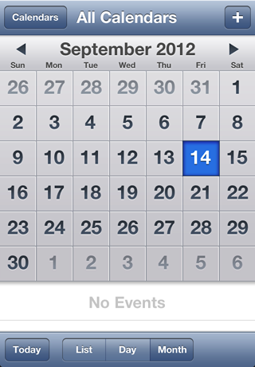
Elevate the Content that People Care About
In a game, people care about the experience; they don’t expect to manage, consume, or create content. If you’re developing a game, you elevate content by enhancing the experience with a satisfying story, beautiful graphics, and responsive gameplay.
If you’re not developing a game, you can help people focus on the content by designing your UI as a subtle frame for the information they’re interested in. Here are some ways you can do this:
Minimize the number and prominence of controls to decrease their weight in the UI. Photos does this by placing a few unobtrusive controls on translucent bars.
Consider subtly customizing controls so that they integrate with your app’s graphical style. In this way, controls are discoverable and comprehensible, without being conspicuous.
Consider fading controls after people have stopped interacting with them for a little while, and redisplaying them when people tap the screen. Sometimes you may want to fade the rest of your app UI, too. This is especially appropriate in apps that enable an immersive experience, because it gives even more of the screen space to the content people want to see. For example, Photos fades the controls and bars after a few moments of noninteraction, which encourages people to immerse themselves in the content. When people want to perform a task with their photos, a single tap anywhere on the screen redisplays the controls.
Think Top Down
The top of the screen is most visible to people, because they tend to interact with the device by holding the device in the following ways:
In their nondominant hand—or laying it on a surface—and gesturing with a finger of the dominant hand
In one hand, and gesturing with the thumb of the same hand
Between their hands, and gesturing with both thumbs
Put the most frequently used (usually higher level) information near the top, where it is most visible and easy to reach. As the user scans the screen from top to bottom, the information displayed should progress from general to specific and from high level to low level.
In a game, for example, the most important action can take place in the top half of the screen. This leaves the bottom half of the screen for supplementary information and for controls users can tap without obscuring their view.
Give People a Logical Path to Follow
People appreciate knowing where they are in an app and getting confirmation that they’re on the right path.
Make the path through the information you present logical and easy for users to predict. In addition, be sure to provide markers—such as back buttons—that users can use to find out where they are and how to retrace their steps.
In most cases, give users only one path to a screen. If a screen needs to be accessible in different circumstances, consider using a modal view that can appear in different contexts.
Make Usage Easy and Obvious
Strive to make your app instantly understandable to people, because you can’t assume that they have the time—or can spare the attention—to figure out how it works.
Make the main function of your app immediately apparent. You can make it so by:
Minimizing the number of controls from which people have to choose
Using standard controls and gestures appropriately and consistently so that they behave the way people expect
Labeling controls clearly so that people understand exactly what they do
Be consistent with the usage paradigms of the built-in apps. Users understand how to navigate a hierarchy of screens, edit list contents, and switch among app modes using the tab bar. Make it easy for people to use your app by reinforcing their experience. For example, people understand that the blue button in a toolbar represents the action they’re most likely to take in the current context. If your app displays more than one blue button in a single context, users will have to figure out which one to tap.
In the built-in Stopwatch function (part of the iPhone Clock app) users can see at a glance which button stops and starts the stopwatch and which button captures lap times.
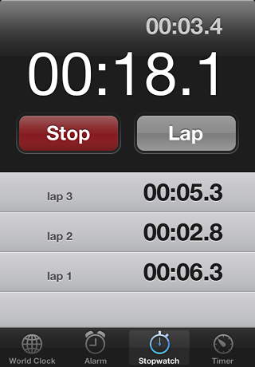
Use User-Centric Terminology
In all your text-based communication with users, use terminology you’re sure they understand. Use what you know about your users to determine whether the words and phrases you plan to use are appropriate. For example, technical jargon is rarely helpful in an app aimed at unsophisticated users, but in an app designed for technically savvy users, it might be appreciated.
The Wi-Fi Networks Settings screen uses plain language to explain how iOS responds to the user’s preference.
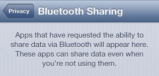
Take care to be accurate when describing dates. It’s often appropriate to use friendly terms such as “today” and “tomorrow” when you display date information in your UI, but it can be confusing if you don’t account for the user’s current locale. For example, consider an event that starts just before midnight. To users in the same time zone, the event starts today, but to users in an earlier time zone, the same event may have started yesterday.
Minimize the Effort Required for User Input
Inputting information takes time and attention, whether people tap controls or use the keyboard. If your app requires a lot of user input before anything useful happens, that input slows people down and can discourage them from using your app.
Balance a request for user input with what you offer users in return. In other words, strive to provide as much information or functionality as possible for each piece of information people give you. That way, people feel they are making progress and are not being delayed as they move through your app.
Make it easy for users to make choices. For example, you can use a table view or a picker instead of a text field, because it’s usually easier for people to select an item from a list than to type words. (To learn more about these UI elements, see “Table View” and “Picker.”)
Get information from iOS, when appropriate. People store lots of information on their devices. When it makes sense, don’t force people to give you information you can easily find for yourself, such as their contacts or calendar information.
Downplay File-Handling Operations
Although iOS apps can allow people to create and manipulate files, this does not mean that people should have an awareness of a file system on an iOS device.
There is no iOS app analogous to the OS X Finder, and people shouldn’t be asked to interact with files as they do on a computer. In particular, people shouldn’t be faced with anything that encourages them to think about file metadata or locations, such as:
An open or save dialog that exposes a file hierarchy
Information about the permissions status of files
As much as possible, allow people to manage documents without opening iTunes on their computer. Consider using iCloud to help users access their content on all of their devices. For some tips on how to provide a great iCloud experience in your app, see “iCloud.”
If your app allows people to create and edit documents, it’s appropriate to provide some sort of document picker that allows them to open an existing document or create a new one. Ideally, such a document picker:
Is highly graphical. People should be able to easily identify the document they want by looking at visual representations of the documents onscreen.
Allows people to make the fewest possible gestures to do what they want. For example, people might scroll horizontally through a carousel of existing documents and open the desired one with a tap.
Includes a new document function. Instead of making people go somewhere else to create a new document, a document picker can allow them to tap a placeholder image to create a new document.
You can also use the Quick Look Preview feature to allow people to preview documents within your app, even if your app can’t open them. To learn how to provide this feature in your app, see “Quick Look Document Preview.”
Enable Collaboration and Connectedness
iOS devices are personal devices, but they also encourage collaboration and sharing with others. Enhance your app by helping people collaborate and connect with others.
When appropriate, make it easy for people to interact with others and share things like their location, opinions, and high scores. People generally expect to be able to share information that’s important to them.
Most apps can add value by allowing people to go beyond the app and share data with other tools they use. For example, an iOS app can act as a mobile complement to a computer app. Or, an iPad app might allow its users to communicate with the users of the iPhone version of the app.
If your app allows people to access their social media accounts, be sure to take advantage of the Social framework APIs so that you can avoid asking users to sign in multiple times on the same device.
For iPad, think of ways to allow more than one person to use your app on the same device. For example, two people might be able to play a game on opposing sides of an onscreen board. Or a band app might allow different people to play different instruments together on a single device.
De-emphasize Settings
Avoid including settings in your app if you can. Settings include preferred app behaviors and information that people rarely want to change. Users can’t open the Settings app without first switching away from your app, and you don’t want to encourage this action.
When you design your app to function the way most of your users expect, you decrease the need for settings. If you need information about the user, query the system for it instead of asking users to provide it. If you decide you must provide settings in your iOS app, see “The Settings Bundle” in iOS App Programming Guide to learn how to support them in your code.
Let users set the behavior they want by using configuration options in your app. Configuration options let your app react dynamically to changes, because people don’t have to leave your app to set them.
Offer configuration options in the main UI or—in iPhone apps—on the back of a view. To decide which location makes sense, determine whether the options represent a primary task and how often people might want to set them.
In the main UI, put options that provide primary functionality or that people want to change frequently.
For example, iPad Calendar allows people to view their schedules by day, week, or month. These configuration options are offered in the main UI because viewing different perspectives of a calendar is a primary function of the app and people are likely to change their focus frequently.
Apps that provide an immersive experience, such as games, are most likely to provide configuration options within the app, because users tend to change aspects of the experience frequently.
In iPhone apps, you can put options that people don’t need to change frequently on the back of a view. For example, the primary function of Weather is to display a city’s current conditions and 6-day forecast. Although it’s important to be able to choose whether temperatures are displayed in Celsius or Fahrenheit, people aren’t likely to change this option very often. Therefore it makes sense to put the temperature-scale option on the back of the Weather view, where it’s conveniently available, but not obtrusive.
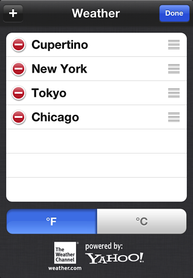
Brand Appropriately
Incorporate a brand’s colors or images in a refined, unobtrusive way. Branding is most effective when it’s subtle and understated. People use your app to get things done or to be entertained; they don’t want to feel as if they’re being forced to watch an advertisement. For the best user experience, you want to quietly remind users of your identity.
Avoid taking space away from the content people care about. For example, displaying a second, persistent bar at the top of the screen that does nothing but display branding assets means that there’s less room for content. Consider other, less intrusive ways to display pervasive branding, such as subtly customizing the background of a screen.
Make Search Quick and Rewarding
In apps that handle or display a lot of data, search can be a primary function. If you need to provide search in your app, follow these guidelines to ensure that it performs well.
Build indexes of your data so that you are always prepared for search. Don't wait until the user initiates a search to do this, because you can't afford to create a negative first impression of the search experience in your app.
Live-filter local data so that you can display results more quickly. It’s best when you can begin filtering as soon as users begin typing, and narrow the results as they continue typing. Although live-filtering data usually produces a superior user experience, it’s not always practical. When live filtering is impractical, you can begin the search process after the user taps the Search button in the keyboard. If you do this, be sure to provide feedback on the search’s progress so users know that the process has not stalled.
When possible, also filter remote data while users type. Although filtering users’ typing can result in a better search experience, be sure to inform them and give them an opportunity to opt out if the response time is likely to delay the results by more than a second or two.
Display a search bar above a list or the index in a list. Users expect to find a search bar in this position, because they're accustomed to the search bar in Contacts and other apps. Putting the search bar in this location means that it stays out of users’ way when they're scrolling through the list or using the index, but is conveniently available when it's needed.
Use a tab for search only in special circumstances. If search is a primary function in your app you might want to feature it as a distinct mode. In iTunes, for example, finding and getting music and podcasts is the focus of the app. Users want to search for their favorite songs, artists, or podcasts regardless of the mode they're currently in, so it makes sense to offer a dedicated search tab that's always available.
If necessary, display placeholder content right away and partial results as they become available. In this way, you give users useful information promptly. In iTunes, for example, users initiate a search for content by tapping the Search button. If the network connection is slow, iTunes first displays the Loading... message along with a spinning activity indicator so users know that search is proceeding. iTunes then displays a results view in which each section is populated with textual results—such as title and genre—and a custom outline of a box. As users scan the items in each section, thumbnail images appear in the box outlines.
Consider providing a scope bar if the data sorts naturally into different categories. A scope bar allows users to specify locations or rules in a search or to filter objects by specific criteria. It contains up to four scope buttons, each representing a category. For example, Mail provides a scope bar that allows users to focus their search on the From, To, or Subject fields of messages, or broaden the search to include all fields. Providing a scope bar helps users focus their search and can significantly reduce the number of results. To learn more about using a scope bar, see “Scope Bar.”
Entice and Inform with a Well-Written Description
Your App Store description is a great opportunity to communicate with potential users. In addition to describing your app accurately and highlighting the qualities you think people might appreciate the most, follow these guidelines:
Be sure to correct all spelling, grammatical, and punctuation errors. Although such errors don’t bother everyone, in some people they can create a negative impression of your app’s quality.
Keep all-capital words to a minimum. The occasional all-capital word can draw people’s attention, but capitalizing every letter of every word in a description can make it very difficult to read.
Consider describing specific bug fixes. If a new version of your app contains bug fixes that customers have been waiting for, it can be a good idea to mention this in your description.
Be Succinct
Think like a newspaper editor, and strive to convey information in a condensed, headline style. When your UI text is short and direct, users can absorb it quickly and easily. Identify the most important information, express it concisely, and display it prominently so that people don’t have to read too many words to find what they’re looking for or to figure out what to do next.
Give controls short labels, or use well-understood symbols, so that people can tell what they do at a glance. When appropriate, use the built-in buttons and icons described in “System-Provided Buttons and Icons”; for guidelines on designing your own icons, see “Icons for Navigation Bars, Toolbars, and Tab Bars.”
Use UI Elements Consistently
People expect standard views and controls to look and behave consistently across apps.
Follow the recommended usages for standard user interface elements. In this way, users can depend on their prior experience to help them as they learn to use your app. You also make it easy for your app to look up-to-date and work correctly if iOS changes the look or behavior of these standard views or controls.
For an app that enables an immersive task—such as a game—it’s reasonable to create completely custom controls. This is because you’re creating a unique environment, and discovering how to control that environment is an experience users expect in such apps.
Avoid radically changing the appearance of a control that performs a standard action. If you use unfamiliar controls to perform standard actions, users will spend time discovering how to use them and will wonder what, if anything, your controls do that the standard ones do not.
iOS makes available to you many of the standard buttons and icons used throughout the built-in apps. For example, you can use the same Refresh, Organize, Trash, Reply, and Compose icons that Mail uses on both iPhone and iPad.

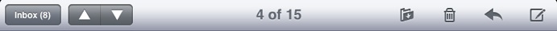
To avoid confusing people, never use the standard buttons and icons to mean something else. Be sure you understand the documented meaning of a standard button or icon; don’t rely on your interpretation of its appearance. To learn more about using system-provided items, see “System-Provided Buttons and Icons.”
In addition to the benefit of leveraging users’ prior experience, using system-provided buttons and icons imparts two other substantial advantages:
Decreased development time, because you don’t have to create custom art to represent standard functions.
Increased stability of your user interface, even if future iOS updates change the appearances of standard icons. In other words, you can rely on the semantic meaning of a standard icon remaining the same, even if its appearance changes.
The Interface Builder editor in Xcode makes it easy to use the system-provided buttons and apply system-provided icons to your controls. For guidance, see the appearance-related information in “Edit User Interfaces” in Interface Builder User Guide.
If you can’t find a system-provided button or icon that has the appropriate meaning for a specific function in your app, you should design a custom button or icon. For some guidelines to help you do this, see “Icons for Navigation Bars, Toolbars, and Tab Bars.”
Consider Adding Physicality and Realism
When appropriate, add a realistic, physical dimension to your app. Sometimes, the more true to life your app looks and behaves, the easier it is for people to understand how it works and the more they enjoy using it. For example, people instantly know how to use the realistic address book that Contacts on iPad portrays.
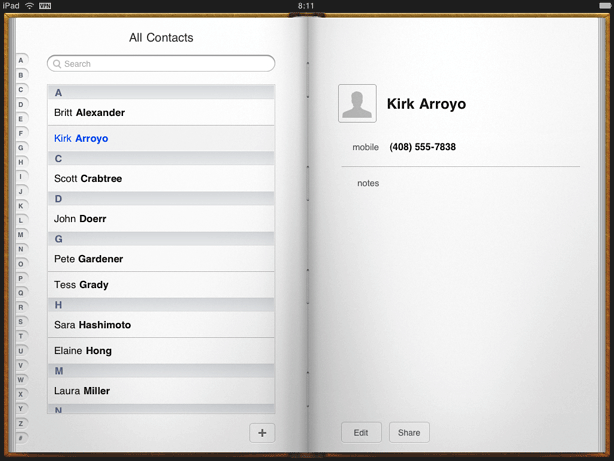
On iPhone, people instantly know what the Voice Memos app does, and how to use it, because it presents a beautifully rendered focal image (the microphone) and realistic controls.
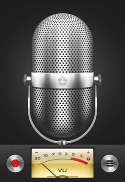
Think of the objects and scenes you design as opportunities to communicate with users and to express the essence of your app. Don’t feel that you must strive for scrupulous accuracy. Often, an amplified or enhanced portrayal of something can seem more real, and convey more meaning, than a faithful likeness.
Use appropriate animation to further enhance realism in your app. In general, it’s more important to strive for accuracy in movement than in appearance. This is because people accept artistic license in appearance, but they can feel disoriented when they see movement that appears to defy physical laws. As much as possible, make sure your virtual views and controls mimic the behavior of the physical objects and controls they resemble. Convincing animation heightens people’s impression of your app as a tangible, physical realm in which they want to spend time.
Delight People with Stunning Graphics
Rich, beautiful, engaging graphics draw people into an app and make the simplest task rewarding. Beautiful artwork also helps to build your app’s brand in people’s eyes. iOS devices showcase your app’s artwork, so you should consider hiring a professional artist to create first-rate graphics that people will admire.
Consider replicating the look of high-quality or precious materials. If the effect of wood, leather, or metal is appropriate in your app, take the time to make sure the material looks realistic and valuable. For example, Notes reproduces the look of fine leather and meticulous stitching.
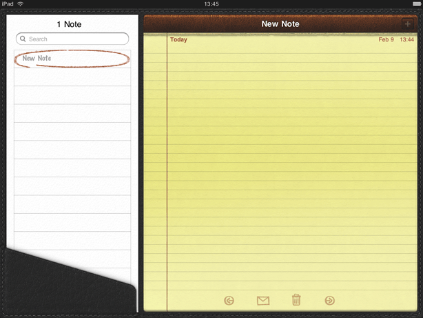
Create high-resolution artwork. In most cases, scaling up your artwork is not recommended as a long-term solution. Instead, try creating your artwork in a dimension that is larger than you need, so you can add depth and details before scaling it down. This works especially well when the dimension of the original art file is a multiple of the dimension you need. Then, if you also use an appropriate grid size in your image-editing app, you’ll be able to keep the scaled-down art file crisp and reduce the amount of retouching and sharpening you need to do.
Spend the time to design a beautiful, memorable app icon. It’s not unusual for users to base the decision to download an app on the quality of its app icon. For guidelines on how to create an app icon, see “App Icons.”
Remove hard-coded values that identify screen dimensions. This is particularly important if you want your app to run on different iOS devices or external displays.
Handle Orientation Changes
People often expect to use their iOS devices in any orientation. You need to determine how to respond to this expectation, within the context of your app and the task it enables.
In all orientations, maintain focus on the primary content. This is your highest priority. People use your app to view and interact with the content they care about. Altering the focus on that content in different orientations can make people feel that they’ve lost control over the app.
Think twice before preventing your app from running in all orientations. People expect to use your app in different orientations, and it’s best when you can fulfill that expectation. iPad users, in particular, expect to use your app in whichever orientation they’re currently holding their device. But in certain cases an app needs to run in portrait only or in landscape only. If it’s essential that your app run in only one orientation, you should:
Launch your app in your supported orientation, regardless of the current device orientation. For example, if your game or media-viewing app runs in landscape only, it’s appropriate to launch your app in landscape, even if the device is currently in portrait. This way, if people start your app in portrait, they know to rotate the device to landscape to view the content.
Avoid displaying a UI element that tells people to rotate the device. Launching in your supported orientation clearly tells people to rotate the device, if required, without adding unnecessary clutter to your UI.
Support both variants of an orientation. For example, if your app runs only in landscape, people should be able to use it whether they’re holding the device with the Home button on the right or on the left. And, if people rotate the device 180 degrees while using your app, it’s best if you can respond by rotating your content 180 degrees.
If your app interprets changes in device orientation as user input, you can handle rotation in app-specific ways. For example, if your app is a game that allows people to move game pieces by rotating the device, you can’t respond to device rotation by rotating the screen. In a case like this, you should launch in either variant of your required orientation and allow people to switch between the variants until they start the main task of the app. Then, as soon as people begin the main task, you can begin responding to device movement in app-specific ways.
Take advantage of the one-step change in orientation to perform smoother, often faster rotations. However, if your screen layout is very complicated, you might choose instead to perform a cross-fade transition when users change the orientation of the device. “Handling View Rotations” in UIViewController Class Reference explains how to use the one-step process in your code.
Pay attention to accelerometer values. To learn more about these values and how to receive them, see Core Motion Framework Reference. If appropriate, your app should respond to all changes in device orientation.
On iPhone, anticipate users’ needs when you respond to a change in device orientation. Users often rotate their devices to landscape orientation because they want to “see more.” If you respond by merely scaling up your content, you fail to meet users’ expectations. Instead, you should respond by rewrapping lines of text and, if necessary, rearranging the layout of the user interface so that more content fits on the screen.
On iPad, strive to satisfy users’ expectations by being able to run in all orientations. The large iPad screen mitigates people’s desire to rotate the device to landscape to “see more.” And because people don’t pay much attention to the minimal frame of the device or the location of the Home button, they don’t view the device as having a default orientation. This experience leads people to expect apps to run well in the device orientation they’re currently using. As much as possible, your app should encourage people to interact with iPad from any side by providing a great experience in all orientations.
Follow these guidelines as you design how your iPad app should handle rotation:
Consider changing how you display auxiliary information or functionality. Although you should make sure that the most important content is always in focus, you can respond to rotation by changing how you provide secondary content.
In Mail on iPad, for example, the lists of accounts and mailboxes are secondary content (the main content is the selected message). In landscape, secondary content is displayed in the left pane of a split view; in portrait, it’s displayed in a popover.
Or, consider an iPad game that displays a rectangular game board in landscape. In portrait, the game needs to redraw the board to fit well on the screen, which might result in additional space above or below the board. Instead of vertically stretching the game board to fit the space or leaving the space empty, the game could display supplemental information or objects in the additional space.
Avoid gratuitous changes in layout. As much as possible, provide a consistent experience in all orientations. A comparable experience in all orientations allows people to maintain their usage patterns when they rotate the device. For example, if your iPad app displays images in a grid while in landscape, it’s not necessary to display the same information in a list while in portrait (although you might adjust the dimensions of the grid).
When possible, avoid reformatting information and rewrapping text on rotation. Strive to maintain a similar format in all orientations. Especially if people are reading text, it’s important to avoid causing them to lose their place when they rotate the device.
If some reformatting is unavoidable, use animation to help people track the changes. For example, if you must add or remove a column of text in different orientations, you might choose to hide the movement of columns and simply fade in the new arrangement. To help you design appropriate rotation behavior, think about how you’d expect your content to behave if you were physically interacting with it in the real world.
Provide a unique launch image for each orientation. When each orientation has a unique launch image, people experience a smooth app start regardless of the current device orientation. In contrast with the Home screen on iPhone, the iPad Home screen supports all orientations, so people are likely to start your app in the same orientation in which they quit the previous app.
Make Targets Fingertip-Size
The screen size of iOS devices might vary, but the average size of a fingertip does not. Regardless of the device your app runs on, following these guidelines ensures that people can comfortably use your app.
Give tappable elements in your app a target area of about 44 x 44 points. The iPhone Calculator app is a good example of fingertip-size controls.
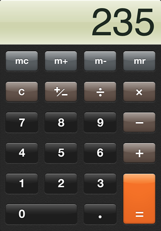
If you create smaller controls, or if you place them too close together, people must aim carefully before they tap and they’re more likely to tap the wrong element. As a consequence, the app becomes much less enjoyable, or even impossible, to use. For example, a game that has small controls that are too close together forces people to concentrate on the interface, instead of on playing the game.
Use Subtle Animation to Communicate
Animation is a great way to communicate effectively, as long as it doesn’t get in the way of users’ tasks or slow them down. Subtle and appropriate animation can:
Communicate status
Provide useful feedback
Enhance the sense of direct manipulation
Help people visualize the results of their actions
Add animation cautiously, especially in apps that do not provide an immersive experience. In apps that are focused on serious or productive tasks, animation that seems excessive or gratuitous can obstruct app flow, decrease performance, and distract users from the task.
Make animation consistent with built-in apps when appropriate. People are accustomed to the subtle animation used in the built-in iOS apps. In fact, most people regard the smooth transitions between views, the fluid response to changes in device orientation, and the realistic flipping and scrolling as an expected part of the iOS experience. Unless you’re creating an app that enables an immersive experience, such as a game, custom animation should be comparable to the built-in animations.
Use animation consistently throughout your app. As with other types of customization, it’s important to use custom animation consistently so that users can rely on the experience they gain with your app.
Support Gestures Appropriately
People use gestures to interact with their iOS devices and they quickly learn to associate certain behaviors with specific gestures. Unless they’re playing a game, people expect apps to respond to their gestures in predictable ways.
Avoid associating different actions with the standard gestures users know. For example, take care to avoid redefining the meaning of the “swipe down from the top” gesture that reveals Notification Center.
Just as important, avoid creating custom gestures to invoke the actions users already associate with the standard gestures.
Use complex gestures as shortcuts to expedite a task, not as the only way to perform a task. Although most users know the more complex standard gestures—such as swipe or pinch open—these complex gestures are not as common.
For example, when viewing a list of messages in Mail, users delete a message by revealing and then tapping the Delete button in the preview row for the message. Users can reveal the Delete button in two different ways:
Tap the Edit button in the navigation bar, which reveals a delete control in each preview row. Then, tap the delete control in a specific preview row to reveal the Delete button for that message.
This method takes an extra step, but is easily discoverable because it requires only the tap and begins with the clearly labeled Edit button.
Make the swipe gesture across a preview row to reveal the Delete button for that message.
This method is faster, but it requires the user to learn and remember the more specialized swipe gesture.
Try to ensure that there is always a simple, straightforward way to perform an action, even if it means an extra tap or two. Simple gestures allow users to focus on the experience and the content, not the interaction.
In general, avoid defining new gestures. When you introduce new gestures, users must make an effort to discover and remember them. The primary exception to this recommendation is an app that enables an immersive experience, in which custom gestures can be appropriate. For example, a document-creation app that requires users to make a circular gesture to reveal the Delete button in a table row would be confusing and difficult to use. But a game might reasonably require users to make a circular gesture to spin a game piece.
Be sure the gestures you use make sense in the context of your app’s functionality and the expectations of your users. If, for example, your app enables an important task that users perform frequently and want to complete quickly, you should probably use only standard gestures. But if your app contains realistic controls that dictate a specific usage, or provides an environment that users expect to explore, custom gestures can be appropriate. (For more information about the standard gestures, see “Apps Respond to Gestures, Not Clicks.”)
For iPad, consider using multifinger gestures. The large iPad screen provides great scope for custom multifinger gestures, including gestures made by more than one person. Although complex gestures are not appropriate for every app, they can enrich the experience in apps that people spend a lot of time in, such as games or content-creation environments. Always bear in mind that nonstandard gestures aren’t discoverable and should rarely, if ever, be the only way to perform an action.
Ask People to Save Only When Necessary
People should have confidence that their work is always preserved unless they explicitly cancel or delete it. If your app helps people create and edit documents, make sure that they don’t have to take an explicit save action. iOS apps should take responsibility for saving people’s input, both periodically and when they open a different document or quit the app.
If the main function of your app isn’t content creation—but you allow people to switch between viewing information and editing it—it can make sense to ask them to save their changes. In this scenario, it often works well to provide an Edit button in the view that displays the information. When people tap the Edit button, you can replace it with a Save button and add a Cancel button. The transformation of the Edit button helps remind people that they’re in an editing mode and might need to save changes, and the Cancel button gives them the opportunity to exit without saving their changes.
For iPad, save information that people enter in a popover (unless they cancel their work), because they might dismiss the popover without meaning to. For more guidelines specific to using popovers, see “Popover (iPad Only).”
Make Modal Tasks Occasional and Simple
When possible, minimize the number of times people must be in a modal environment to perform a task or supply a response. iOS apps should allow people to interact with them in nonlinear ways. Modality prevents this freedom by interrupting people’s workflow and forcing them to choose a particular path.
Modality is most appropriate when:
It’s critical to get the user’s attention.
A task must be completed (or explicitly abandoned) to avoid leaving the user’s data in an ambiguous state.
People appreciate being able to accomplish a self-contained subtask in a modal view, because the context shift is clear and temporary. But if the subtask is too complex, people can lose sight of the main task they suspended when they entered the modal view. This risk increases when the modal view is full screen and when it includes multiple subordinate views or states.
Keep modal tasks fairly short and narrowly focused. You don’t want your users to experience a modal view as a mini app within your app. Be especially wary of creating a modal task that involves a hierarchy of views, because people can get lost and forget how to retrace their steps. If a modal task must contain subtasks in separate views, be sure to give users a single, clear path through the hierarchy, and avoid circularities.
Always provide an obvious and safe way to exit a modal task. People should always be able to predict the fate of their work when they dismiss a modal view.
If the task requires a hierarchy of modal views, make sure your users understand what happens if they tap a Done button in a view that’s below the top level. Examine the task to decide whether a Done button in a lower-level view should finish only that view’s part of the task or the entire task. When possible, avoid adding Done buttons to subordinate views, because of this potential for confusion.
Start Instantly
It’s often said that people spend no more than a minute or two evaluating a new app. When you make the most of this brief period by presenting useful content immediately, you pique the interest of new users and give all users a superior experience.
Display a launch image that closely resembles the first screen of the app. This practice decreases the perceived launch time of your app.
Avoid displaying an About window or a splash screen. In general, try to avoid providing any type of startup experience that prevents people from using your app immediately.
On iPhone, specify the appropriate status bar style. In general, you want the status bar to coordinate with the rest of your app’s UI.
Launch in the appropriate default orientation. On iPhone, the default orientation is portrait; on iPad, the default orientation is the current device orientation. If, however, you intend your app to be used only in landscape orientation, launch in landscape regardless of the current device orientation and allow users to rotate the device to landscape orientation if necessary.
A landscape-only app should support both landscape orientations—that is, with the Home button on the right or on the left. If the device is already physically in a landscape orientation, a landscape-only app should launch in that orientation, unless there’s a very good reason not to. Otherwise, a landscape-only app should launch in the orientation with the Home button on the right by default.
Avoid asking people to supply setup information. Instead, follow these guidelines:
Focus your solution on the needs of 80 percent of your users. When you do this, the majority of users do not need to supply settings because your app is already set up to behave the way they expect. If there is functionality that only a handful of people might want, or that most people might want only once, leave it out.
Get as much information as possible from other sources. If you can use any of the information people supply in built-in app or device settings, query the system for these values; don’t ask people to enter them again.
If you must ask for setup information, prompt people to enter it within your app. Then, as soon as possible, store this information (possibly, in your app’s settings). This way, people aren’t forced to quit your app and open Settings before they get the chance to enjoy your app. If people need to make changes to this information later, they can go to your app’s settings at any time.
Delay a login requirement for as long as possible.Ideally, users should be able to navigate through much of your app and use some of its functionality without logging in. When you ask users to log in before they can start using your app, it can make the start-up process seem longer.
When your app restarts, restore its state so that users can continue what they were doing. People should not have to remember the steps they took to reach their previous location in your app. To learn more about efficient ways to preserve and restore your app’s state, see “State Preservation and Restoration”.
Always Be Prepared to Stop
iOS apps stop when people press the Home button to open a different app or use a device feature, such as the phone. In particular, people don’t tap an app close button or select Quit from a menu. To provide a good stopping experience, an iOS app should:
Save user data as soon as possible and as often as reasonable because an exit or terminate notification can arrive at any time.
Save the current state when stopping at the finest level of detail possible so that people don’t lose their context when they start the app again. For example, if your app displays scrolling data, save the current scroll position. To learn more about efficient ways to preserve and restore your app’s state, see “State Preservation and Restoration”.
Don’t Quit Programmatically
Never quit an iOS app programmatically because people tend to interpret this as a crash. However, if external circumstances prevent your app from functioning as intended, you need to tell your users about the situation and explain what they can do about it. Depending on how severe the app malfunction is, you have two choices.
Display an attractive screen that describes the problem and suggests a correction. A screen provides feedback that reassures users that there’s nothing wrong with your app. It puts users in control, letting them decide whether they want to take corrective action and continue using your app or press the Home button and open a different app
If only some of your app's features are unavailable, display either a screen or an alert when people use the feature. Display the alert only when people try to access the feature that isn’t functioning.
If Necessary, Display a License Agreement or Disclaimer
If you provide an end-user license agreement (or EULA) with your iOS app, the App Store displays it so that people can read it before they get your app.
If possible, avoid requiring users to indicate their agreement to your EULA when they first start your app. Without an agreement displayed, users can enjoy your app without delay. However, even though this is the preferred user experience, it might not be feasible in all cases. If you must display a license agreement within your app, do so in a way that harmonizes with your user interface and causes the least inconvenience to users.
If possible, provide a disclaimer within your app description or EULA. Users can then view the disclaimer in the App Store, and you can balance business requirements with user experience needs.
For iPad: Enhance Interactivity (Don’t Just Add Features)
The best iPad apps give people innovative ways to interact with content while they perform a clearly defined, finite task.
Resist the temptation to add features that are not directly related to the main task. Instead, explore ways to allow people to see more and interact more. In particular, you shouldn’t view the large iPad screen as an invitation to bring back all the functionality you might have pruned from your iPhone app.
To make your iPad app stand out, concentrate on ways to amplify the user experience, without diluting the main task with extraneous features. For example:
A book-reader app that allows people to read books and keep track of reading lists can provide a very enjoyable reading experience on the large screen. Instead of making people transition to another screen to manage their reading lists, the app can put the list in a popover and allow people to copy favorite passages into it. The app can also let people add bookmarks and annotations to the text, and help them trade their lists with others or compare their progress against a central repository of lists.
A fighter pilot game might enable a translucent heads-up display over the main view. Players can tap realistic cockpit controls to engage the enemy or locate themselves on a map overlay.
A soccer playing game can display a larger, more realistic playing field and more detailed characters, and allow people to manage their teams and customize the characters. It can also allow people to see information about characters without leaving the field view. Finally, it can enable a multiplayer mode in which two people can pit their teams against each other.
A screenwriting app might provide ways to switch between a plot view and a character view without leaving the main context. Writers can switch between these views to check details as they write in the main view.
For iPad: Reduce Full-Screen Transitions
Closely associate visual transitions with the content that’s changing. Instead of swapping in a whole new screen when some embedded information changes, try to update only the areas of the UI that need it. As a general rule, transition individual views and objects, not the screen. In most cases, flipping the entire screen is not recommended.
When you perform fewer full-screen transitions, your iPad app has greater visual stability, which helps people keep track of where they are in their task. You can use UI elements such as split view and popover to lessen the need for full-screen transitions.
For iPad: Restrain Your Information Hierarchy
Use the large iPad screen and iPad-specific UI elements to give people access to more information in one place. Although you don’t want to pack too much information into one screen, you also want to prevent people from feeling that they must visit many different screens to find what they want.
In general, focus the main screen on the primary content and provide additional information or tools in an auxiliary view, such as a popover. This gives people easy access to the functionality they need, without requiring them to leave the context of the main task.
With the large iPad screen, and UI elements such as a split view and popovers, you have alternatives to the one-level-per-screen structure of many iPhone apps. (For specific guidelines on how to use these elements, see “Split View (iPad Only)” and “Popover (iPad Only).”)
Use a navigation bar in the right pane of a split view to allow people to drill down into a top-level category that is persistently displayed in the left pane. A split view flattens your information hierarchy by at least one level, because two levels are always onscreen at the same time. For example, Settings displays device and app settings using a navigation bar in the right pane of a split view.
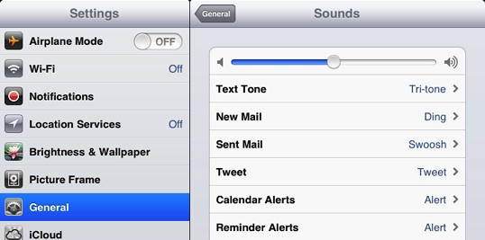
Use a navigation bar in the left pane of a split view to allow people to drill down through a fairly shallow hierarchy. Then, display the most specific information (that is, the leaf nodes in the hierarchy) in the right pane. This, too, flattens your hierarchy by displaying two levels onscreen at one time. For example, Mail in landscape uses this design to display the hierarchy of accounts, mailboxes, and message lists in the left pane, and individual messages in the right pane.
Use a popover to enable actions or provide tools that affect onscreen objects. A popover can display these actions and tools temporarily on top of the current screen, which means people don’t have to transition to another screen to get them. For example, Reminders uses a popover to give users an easy way to add details to a reminder item they created.
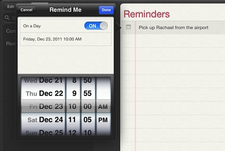
Use a segmented control in a toolbar to display different perspectives on the content or different information categories. In this way, you can provide access to these perspectives or categories from a single bar at the top (or the bottom) of the screen. (For usage guidelines, see “Toolbar” and “Segmented Control.”) For example, iTunes uses a segmented control in a top-edge toolbar to provide different perspectives on the content in a category.
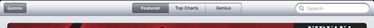
Use a tab bar to display different information categories or, less often, different app modes. In iPad apps, a tab bar is more likely to be used as a filter or category switcher than as a mode switcher. For example, iTunes uses a tab bar to give people access to different categories of media.
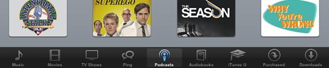
When possible, avoid using a tab bar to swap in completely different screens, because it’s best to reduce full-screen transitions on iPad.
For iPad: Consider Using Popovers for Some Modal Tasks
Popovers and modal views are similar, in the sense that people typically can’t interact with the main view while a popover or modal view is open. But a modal view is always modal, whereas a popover can be used in two different ways:
Modal, in which case the popover dims the screen area around it and requires an explicit dismissal. This behavior is very similar to that of a modal view, but a popover’s appearance tends to give the experience a lighter weight.
Nonmodal, in which case the popover does not dim the screen area around it and people can tap anywhere outside its bounds (including the control that reveals the popover) to dismiss it. This behavior makes a nonmodal popover seem like another view in the app.
In addition, a popover always has an arrow that points to the control or area the user tapped to reveal it. This visual tie-in helps people remember their previous context. It also makes a modal popover seem like a more transient state than a modal view, which takes over the screen without indicating where it came from.
If you use modal views to enable self-contained tasks in your iPhone app, you might be able to use popovers instead. To help you decide when this might be appropriate, consider these questions:
Does the task require more than one type of input? If so, use a popover.
Although a keyboard can accompany either a popover or a modal view, a popover is better for displaying a picker or a list of options.
Does the task require people to drill down through a hierarchy of views? If so, use a popover.
The frame of a popover is better suited to displaying multiple pages, because there is less chance people will confuse it with the main view.
Might people want to do something in the main view before they finish the task? If so, use a nonmodal popover.
Because people can see the main view around a nonmodal popover and they can dismiss it by tapping in the main view, you should allow them to suspend the popover’s task and come right back to it.
Is the task fairly in-depth and does it represent one of the app’s main functions? If so, you might want to use a modal view.
The greater context shift of a modal view helps people stay focused on the task until they finish it. The greater screen space of most modal view styles makes it easier for people to provide a lot of input.
If, on the other hand, the task represents an important part of app functionality, but it is not in-depth, a modal popover can be a better choice. This is because the lighter visual weight of a popover can be more pleasant for frequently performed tasks.
Is the task performed only once or very infrequently, as with a setup task? If so, consider using a modal view.
People aren’t as concerned about staying in the current context when they perform a task only once or very infrequently.
There are a number of other uses for popovers, such as to provide auxiliary tools (for complete usage guidelines, see “Popover (iPad Only)”). Also, iPad apps display action sheets inside popovers (for more information, see “Action Sheet”).
If you decide to use a modal view, be sure to read about the different presentation styles you can use (they’re described in “Modal View”). In your iPad app, you can choose the presentation style that’s best suited to the modal task you need to enable.
For iPad: Migrate Toolbar Content to the Top
If your iPhone app has a toolbar, consider moving it to the top of the screen instead of leaving it at the bottom. With the additional width of the iPad screen, you should be able to provide all of your toolbar functionality in a single toolbar at the top. This gives you more vertical space for your focused content.
For example, Mail on iPhone uses a toolbar at the bottom to give people access to the refresh, organize, trash, reply, and compose actions while they view messages.
Mail on iPad migrates all but one of these actions to a toolbar located above the message. The Refresh control remains at the bottom of the mailbox list.
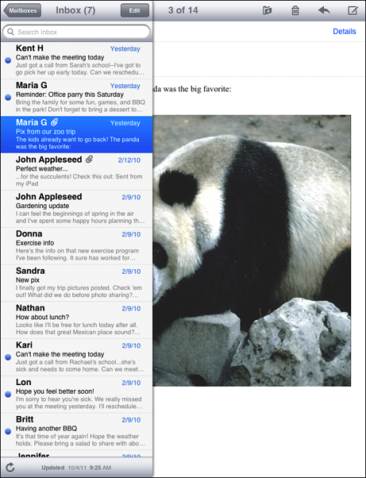
Copyright © 2013 Apple Inc. All Rights Reserved. Terms of Use | Privacy Policy | Updated: 2013-05-01